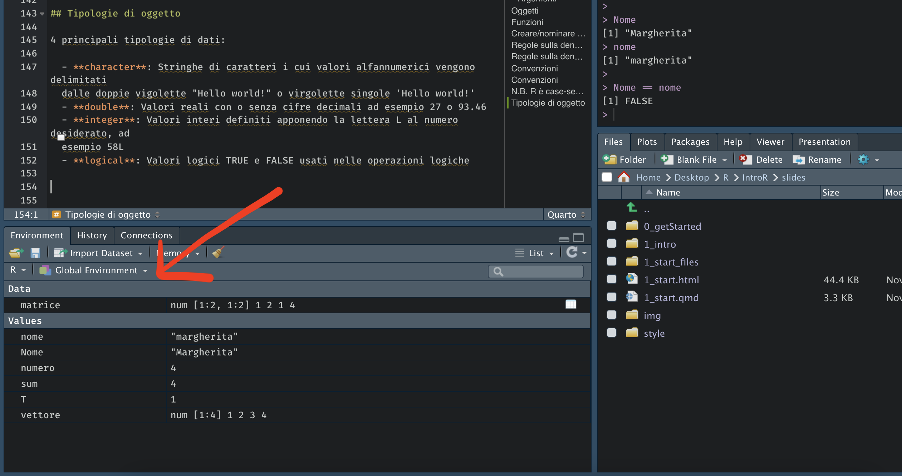
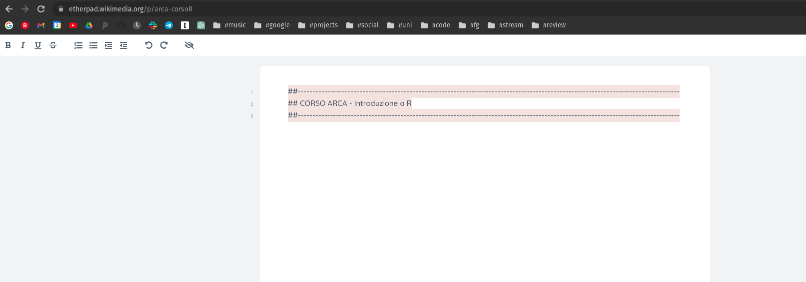

[1] 4Everything we can create in R is called an object (e.g., numbers, vectors, matrices, functions).
Everything we do in R is calling functions on objects.
Functions allow us to create and modify objects.
Objects can be created with either the <- or the = command
[1] 3[1] 3[1] TRUEYou can choose the command you prefer; the important thing is to be consistent.
It must not contain special characters such as #, &, $, ?, etc.
It must not be a reserved word, i.e. one of the words used by R with a special meaning (?reserved).
Some names are not forbidden but are discouraged
Using “.” in object names (for example, “my.data”) is fine in R but is not allowed in Python, where “.” is part of the language syntax.
Across languages, the naming conventions for longer, multi-word variable names favour snake_case (for example, “my_data”) or camelCase (for example, “myData”), and abbreviations where appropriate (for example, “unipdData” rather than “university_of_padova_dataset”).
By default, objects are created in the global environment, which can be accessed with ls() or viewed in R Studio together with some additional information:

We can remove an object from our environment with the rm("objectname") command.
We can also completely clear/empty our environment with the rm(list = ls()) command.
character: Character strings whose alphanumeric values are delimited by double quotes “Hello world!” or single quotes ‘Hello world!’numbers:
double: Real values with or without decimal digits, for example 27 or 93.46integer: Integer values defined by appending the letter L to the number, for example 58L| Function | What does it do? | Example | Result |
|---|---|---|---|
+ |
addition | 5.4 + 6.1 |
11.5 |
- |
subtraction | 9 - 4.3 |
4.7 |
* |
multiplication | 7 * 1.4 |
9.8 |
/ |
division | 9/3 |
3 |
%% |
remainder | 9%%2 |
1 |
^ |
power | 15 ^ 2 |
225 |
| Function | What does it do? | Example | Result |
|---|---|---|---|
abs |
absolute value | abs(-8) |
8 |
sqrt |
square root | sqrt(225) |
15 |
exp |
exponential function | exp(0) |
1 |
log |
natural logarithm | log(1) |
0 |
round |
rounding, integer | round(1.738) |
2 |
round |
rounding | round(1.738, 2) |
1.74 |
The order of operations in R follows the rules of mathematics.
Examples
In R we can evaluate whether a given relation is true or false. R will evaluate the statement and return TRUE if the statement is true or FALSE if the statement is false.
| Function | Name | Example | Result |
|---|---|---|---|
== |
equal | 30 == 30 |
TRUE |
!= |
not equal | 30 != 30 |
FALSE |
>/>= |
greater/or equal |
|
|
</<= |
less/or equal |
|
|
%in% |
inclusion | 10%in%c(1,2,10) |
TRUE |
It doesn’t only work with numbers!
PS. Remember that = is different from ==
In R we can combine several relations to evaluate a given statement.
| Function | Name | Example | Result |
|---|---|---|---|
& |
Conjunction (AND) | x>25 & x<60 |
TRUE |
| |
Inclusive disjunction (OR) | x>25 | x>60 |
TRUE |
! |
Negation (NOT) | !(x<18) |
TRUE |
[1] FALSE[1] TRUE[1] FALSETRUE is equivalent to 1 and FALSE to 0
I create an example vector containing the words home (repeated 4 times) and shop (repeated 2 times):
When evaluating whether statements are true, R performs the operations in the following order:
If in doubt about the order in which operations are executed, the best thing to do is to use round brackets ( ) to remove any possible ambiguity.
Open this link and keep it open: https://etherpad.wikimedia.org/p/arca-corsoR
